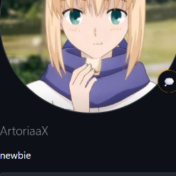

Halo, Saya
Ahmad AL-Fatih
"ArtoriaaX"
Siswa & praktisi Teknik Komputer & Jaringan (TKJ) dengan pengalaman konfigurasi router MikroTik, administrasi Linux Server, infrastruktur Fiber Optic, dan pengembangan Web Modern.

About Me
Professional Summary
"A Student majoring in Computer and Network Engineering (TKJ) with experience in network configuration using MikroTik, Linux server administration, and PC hardware troubleshooting. Skilled in maintaining network stability, improving system security, and implementing Apache-based virtual hosts."
Memiliki daya analisa yang kuat, pemecahan masalah yang efisien, dan siap berkontribusi secara nyata dalam lingkungan teknologi yang dinamis dan terus berkembang.
Work Experience
Network & System Engineer (Intern/Specialist)
PT Nusa Network Prakasa
- Membuat dokumen MOP, UAT, serta dokumentasi teknis (Maintenance, Troubleshoot, and Installation).
- Melakukan konfigurasi dan troubleshooting perangkat Jaringan & Firewall.
- Melakukan pengujian konektivitas jaringan (ping, traceroute) dan real-time monitoring melalui NMS-SolarWinds & FortiManager.
- Menganalisa performa jaringan sebelum dan sesudah penggantian perangkat untuk memastikan kepatuhan SLA SDWAN.
- Memastikan operasional aplikasi kritikal berjalan lancar pasca migrasi.
- Mengawasi dan mengkoordinasikan penggantian perangkat FortiSwitch yang dilakukan oleh tim Engineer On Site (EOS).
Fiber Optic Technician & Internet Installation Specialist
PT Digital Hasanah Indonesia
- Fiber Optic Splicing: Melakukan penyambungan kabel fiber optik secara presisi untuk memastikan koneksi optimal dalam transmisi data efisien.
- Internet Installation: Memasang dan mengkonfigurasi koneksi internet rumahan untuk klien pelanggan.
- Signal Quality: Memastikan kualitas redaman kabel fiber optik sesuai standar transmisi terbaik.
- Client Support & Troubleshooting: Memberikan dukungan teknis kepada pelanggan serta diagnosa & perbaikan kendala koneksi kabel optik.
Certifications & Skills
SMK LETRIS INDONESIA 1
System Administrator and Network Engineering (TKJ)
MikroTik & Networking
Routing Static & Dynamic, Wireless, Firewall & NAT, Bandwidth Limiter (Queue).
Linux & Servers
Apache, Nginx, Mail Server, Samba, DNS Server, OpenVPN, FTP Server, DHCP Server.
Cisco Enterprise
RIP, EIGRP, OSPF, DHCP, VLAN, Spanning-Tree (STP), Etherchannel, NAT, HSRP.
Computer Networking
Servers & Systems
Monitoring & Diagnostics
Web & Coding
Featured Projects
ArtPortfo (Portfolio 2026)
Portofolio personal berkonsep anime aesthetic (Artoria Pendragon / Fate) dengan dukungan animasi partikel mana, dual persona avatar switcher, timeline karier interaktif, dan integrasi penuh CV.
projek-ambacaffe
Website showcase kafe modern dengan katalog menu interaktif, tata letak responsif untuk ponsel dan desktop, serta skema warna yang elegan.
3dfnafportfolio
Eksperimen portofolio 3D dengan visual bertema misteri/cinematic, mengeksplorasi CSS 3D transforms, pencahayaan dinamis, dan efek visual yang imersif.
Penjumlahan & Operasi Matrix C++
Program komputasi aljabar linear untuk operasi matriks multi-dimensi (penjumlahan, pengurangan, perkalian) dengan validasi ordo dan efisiensi memori berbasis C++.
Get In Touch
Mari Terhubung & Berkolaborasi!
Terbuka untuk kesempatan magang, pekerjaan profesional di bidang Network Engineering, System Administration, maupun proyek Web Development.